Вход, возврат и совместный отбор в готовом приложении обслуживания оборудования.
ПМ.04 · Раздел 1
Общее задание
1
Цель и исходное состояние
Выполнить сопровождение готового приложения C# WPF для назначенной области обслуживания оборудования. На входе предоставлены модель данных, JSON и готовая операция заявки. Требуются базовые знания C#, коллекций, условий и работы с проектом Visual Studio.
2
Три диагностических результата
Воспроизвести и исправить D1 — допуск неизвестного логина; D2 — потерю неподтверждённой заявки при возврате; D3 — неправильное совместное применение поиска, категории и числовой сортировки. Для каждого получить собственную цепочку «симптом → причина → правка → повторная проверка → регрессия».
3
Готовая операция заявки
Использовать предоставленный OrderService: проверка положительного количества, учёт уже добавленных строк, проверка всех исполнений и списание ресурсов при подтверждении. Не создавать заново корзину, алгоритм списания или модель хранения. Исправления выполнить в трёх методах RepairLogic; готовую операцию проверить как соседнюю функцию.
4
Границы результата
JSON — локальный диагностический стенд. Работа не подтверждает чтение каталога из БД, транзакции СУБД или полное покрытие требований ДЭ. Не добавлять роли администратора, проектирование БД и новые операции заказа.
5
Критерии приёмки
Неизвестный и пустой логины отклоняются; зарегистрированный логин даёт своё ФИО. Возврат сохраняет заявку, поиск, категорию и сортировку. Поиск по имени или описанию применяется вместе с категорией; стоимость сравнивается как decimal, равенство разрешается по Id. Отказ ввода сохраняет остальные данные; исправление поля позволяет продолжить. Готовая заявка сохраняет пользователя, дату и все строки; повторный запуск показывает изменённые остатки.
6
Самостоятельная работа и сдача
Выполнить три исправления и дополнительный сценарий назначенного варианта на его данных. Представить исправленный проект в репозитории, отчёт со ссылкой на этот репозиторий, инструкцию пользователя, аттестационный лист, индивидуальное задание и презентацию результатов по выданным формам. В отчёте сохранить исходные условия, ожидаемые результаты до запуска, фактические данные, причины и доказательства регрессии. Демонстрационный разбор объясняет способ, но не заменяет индивидуальные доказательства.
ПМ.04 · Раздел 2
Файлы для работы
1
Исходный проект
Начальная копия с тремя дефектами и готовой операцией заявки. Архив сохранить отдельно от рабочих папок.
Проверка. Открыть stands/Shop-source/Shop.csproj после распаковки.
2
Данные назначенного варианта
В карточке своей области скачать variant-NN.json. Из него создать baseline.json и work-data.json; до начала испытаний сверить Id, исполнения и дополнительные условия.
Проверка. Демонстрационные данные не подменяют индивидуальную область.
3
Образец и формы
Исправленный проект «Контур» служит отдельной сверкой после анализа. Шаблон отчёта задаёт состав доказательств. Аттестационный лист, индивидуальное задание и презентацию предоставляет преподаватель через EatDoners.
Проверка. Ссылка на собственный репозиторий указывается в самом отчёте.
Скачать Shop-source.zip, сохранить архив без изменений. Распаковать отдельную рабочую копию: внутри находятся stands/Shop-source/Shop.csproj и data.json. В Visual Studio выбрать «Файл → Открыть → Проект или решение» и Shop.csproj. Установлены .NET 10 SDK и компонент разработки классических приложений .NET. Собрать через Ctrl+Shift+B; запустить Ctrl+F5. При ошибке SDK открыть Visual Studio Installer, добавить этот компонент и .NET 10 SDK, затем повторить сборку; учебные ошибки D1–D3 не являются ошибками компиляции.
Проверка. Проект собран. Окно показывает демонстрацию «Контур», пять позиций, два пользователя и пустую историю.
2
Назначить отдельный файл испытания
Скопировать data.json из неизменённого архива в отдельную папку контрольных данных как baseline.json. В папке проекта создать work-data.json из baseline.json. В свойствах проекта Visual Studio открыть «Отладка → Открыть пользовательский интерфейс профилей запуска», в аргументах командной строки указать полный путь к work-data.json в кавычках. Приложение принимает этот путь первым аргументом. Без аргумента используется data.json рядом с запущенным .exe, что для независимых испытаний менее удобно.
Проверка. После запуска с аргументом изменения заявки записываются именно в work-data.json. Файл baseline.json остаётся неизменным.
3
Восстановить состояние перед независимым тестом
Закрыть приложение. Скопировать baseline.json поверх work-data.json с подтверждением замены. Запустить приложение с тем же аргументом. Не восстанавливать только файл проекта или bin наугад: рабочий путь задан явно. Для отдельного варианта baseline.json должен быть получен из variant-NN.json этого варианта, а не из демонстрации.
Проверка. Orders пуст, у P1 остатки 5 и 3, стоимость Price = 1000. Изменения предыдущего испытания отсутствуют. Исходное значение DiscountPrice = 0 не означает нулевую стоимость: окно округляет Price до двух знаков.
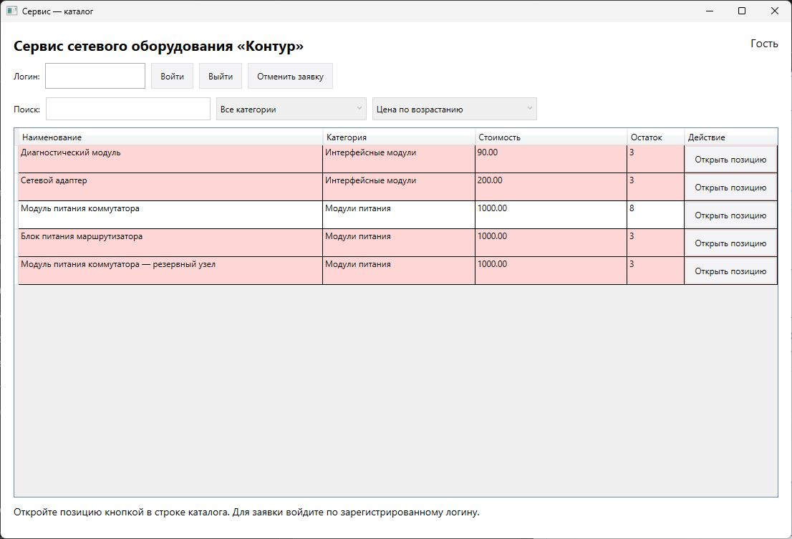
Рисунок 1 — Контрольное состояние демонстрации: пять позиций, пустая история, исходные ресурсы. Числовой порядок исправленного каталога: 90, 200, 1000, 1000, 1000.
ПМ.04 · Раздел 3.2
Устройство стенда и перенос на свою область
1
Найти границу изменения
MainWindow.xaml описывает элементы окна; MainWindow.xaml.cs вызывает RepairLogic.Authenticate, Back и Catalog. Models.cs задаёт данные. ComponentContracts.cs задаёт интерфейсы. OrderService.cs содержит готовые ValidateQuantity и Commit; Confirm_Click записывает проверенную копию в файл и только после успешного сохранения заменяет рабочие данные.
Проверка. Изменять три метода RepairLogic.cs. Не переписывать OrderService, обработчики сохранения и модель ради сокрытия дефекта.
2
Прочитать интерфейс и обобщённый метод
Интерфейс перечисляет свойства, которые обязан предоставить объект. IRegisteredUser требует Login; ICatalogItem — поля позиции. TUser и TItem обозначают тип объектов вызывающей стороны, а не конкретно User или Product. Ограничение where TUser : class, IRegisteredUser разрешает ссылочный тип с Login; TUser? допускает null при отказе. IEnumerable<T> позволяет прочитать последовательность, ICollection<T> обозначает коллекцию строк. Выражение u => u.Login == login.Trim() — условие отбора одной записи. В LINQ Where оставляет подходящие записи, OrderBy задаёт первый ключ, ThenBy — следующий, ToList создаёт список результата. Эти приёмы используются в приведённых полных методах; интерфейсы предоставлены готовыми.
3
Прочитать поля
Users содержит Login и FullName. Products — позиции обслуживания: Id, Name, Description, Category, Price и Stock. Stock сопоставляет строку исполнения с количеством доступных узлов. DiscountPrice — округлённая стоимость отображения, историческое имя поля сохранено для совместимости; скидка не рассчитывается. Orders содержит оформленные заявки; Quantity — количество, Size — строка исполнения, а не размер одежды.
Проверка. Позиции различаются по Id. Равные имена или исполнения не объединяют ресурсы. До подтверждения Stock не изменяется.
4
Подготовить индивидуальные данные
В карточке варианта скачать variant-NN.json. Создать из него baseline.json и work-data.json, указать рабочий путь в аргументе запуска. Сверить название области, пять Id, категории, исполнения, количества и дополнительные условия. Код общего стенда одинаков, собственные ожидаемые Id и количества определяются индивидуальным JSON.
Проверка. Окно показывает именно назначенную область. Демонстрационный архив с исправлениями открывается отдельно только после самостоятельного анализа причин.
5
Выбрать доказательство до начала правки
Для D1 сравнивать введённый логин и ФИО; для D2 — одну и ту же строку заявки до и после возврата; для D3 — состав Id и порядок стоимости при неизменных запросе и категории. Снимок с работающей кнопкой не доказывает устранение причины. Причину подтверждать фрагментом исходного кода, исправление — повтором тех же входов. Изменённые данные и новый запрос не использовать вместо повтора.
Проверка. Запись содержит начальные данные, действие, ожидание, факт и объяснение; каждый дефект имеет собственную запись.
ПМ.04 · Раздел 3.3
D1. Вход зарегистрированного пользователя
1
Воспроизвести симптом
На чистой демонстрационной копии ввести nobody и нажать «Войти». Исходная версия ошибочно допускает логин как первого пользователя. Сохранить введённый логин, показанное ФИО и доступность поиска. Нажать «Выйти».
Проверка. Ожидание до исправления отличается от факта: nobody отсутствует в Users и должен получить отказ.
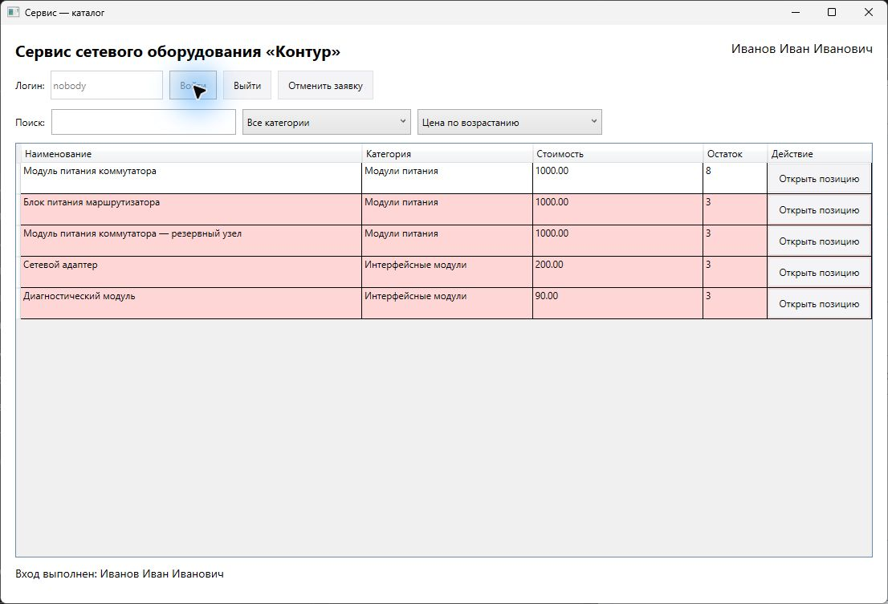
Рисунок 2 — Исходный D1: логин nobody ошибочно получил ФИО зарегистрированного пользователя и доступ к поиску.
2
Локализовать причину
Открыть Login_Click и перейти к Authenticate. Метод ищет логин, но оператор ?? подставляет первого зарегистрированного пользователя при отсутствии совпадения. Так сообщение об успешном входе получает и неизвестный логин. Удалить запасной выбор пользователя. В файле RepairLogic.cs заменить целиком только метод Authenticate; namespace, класс и соседние методы не дублировать.
3
Образец метода Authenticate
public static TUser? Authenticate<TUser>(IEnumerable<TUser> users, string login)
where TUser : class, IRegisteredUser
{
return users.FirstOrDefault(u => u.Login == login.Trim());
}
4
Объяснить и повторить
FirstOrDefault возвращает найденный объект или null. Trim удаляет крайние пробелы; сравнение логина остаётся чувствительным к регистру. Собрать, запустить и повторить nobody: сообщение называет поле логина, вход не выполнен. Не закрывая окно, заменить nobody на client и повторить вход.
Проверка. Поле сохранило ввод после отказа; client показывает Иванов Иван Иванович. buyer даёт другое ФИО. Пустой логин отклоняется. В своей области ожидание ФИО брать из Users.
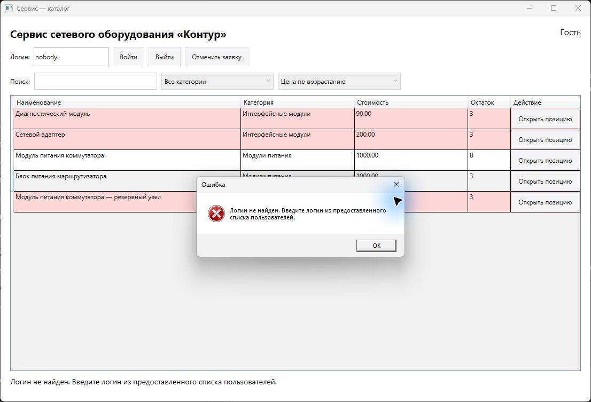
Рисунок 3 — После исправления D1 неизвестный логин отклонён. Введённое значение сохранено, пользователь остаётся гостем.
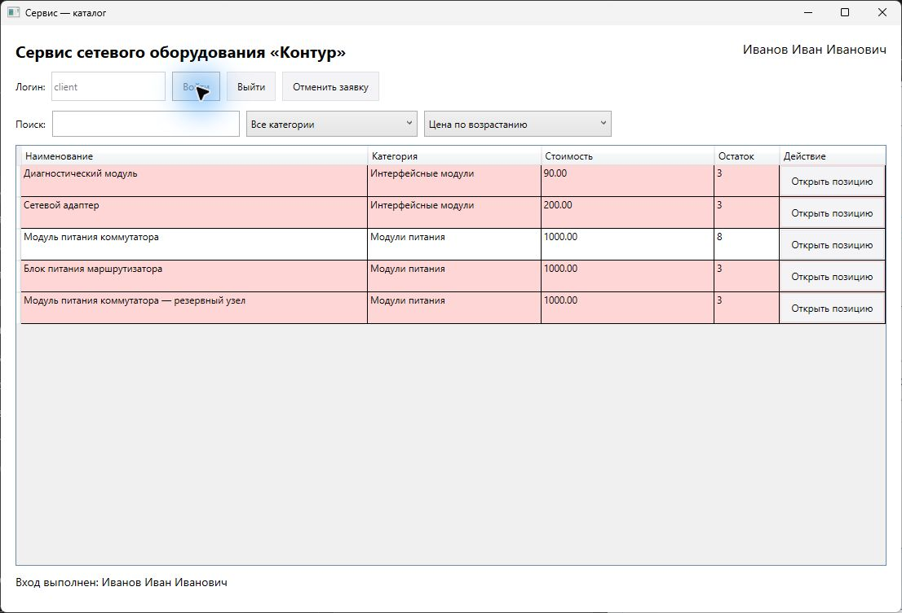
Рисунок 4 — После замены логина на client вход выполнен с соответствующим ФИО. Повторный вход заблокирован до выхода.
ПМ.04 · Раздел 3.4
D2. Возврат без потери заявки
1
Воспроизвести отдельный дефект
После исправления D1 войти как client. Открыть P1, выбрать первое исполнение с остатком 5 и добавить 1. Перед переходом убедиться, что в заявке одна строка P1 с количеством 1. Нажать «Назад к каталогу» и открыть P5, резервный узел. В исходном Back строка P1 исчезает. Остатки при этом не изменяются, так как подтверждения не было. Для независимого повторного теста закрыть приложение и восстановить work-data.json из baseline.json.
Проверка. До возврата и после него ожидается одна и та же строка P1; изменение экрана не означает отмену заявки.
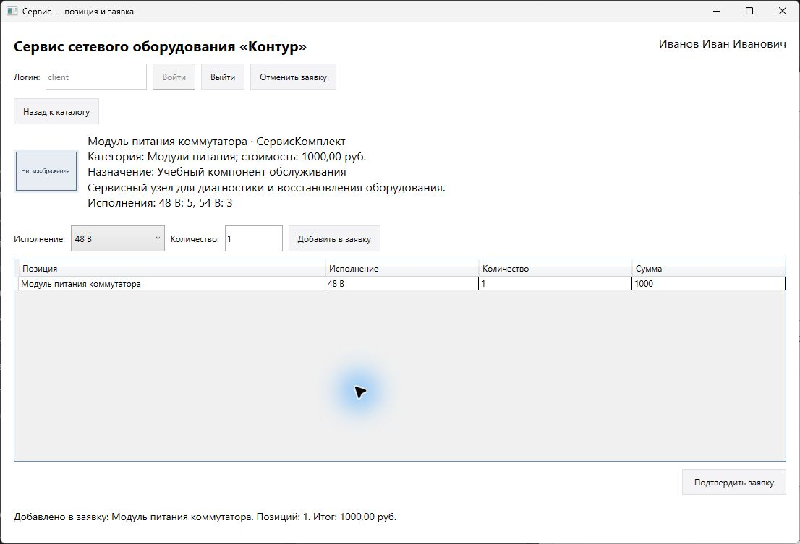
Рисунок 5 — Перед возвратом добавлена одна единица P1, исполнение 48 В. Это контрольная строка для проверки навигации.
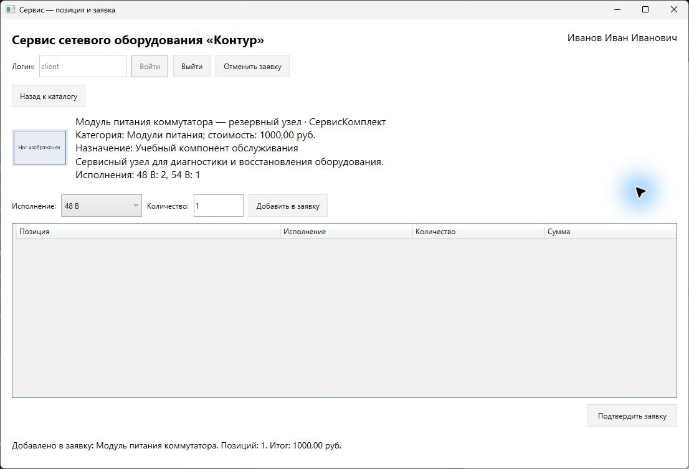
Рисунок 6 — Исходный D2: после возврата и открытия P5 контрольная строка P1 исчезла. Сообщение внизу осталось прежним и не является доказательством сохранения заявки.
2
Локализовать изменение состояния
Back_Click вызывает Back, а затем ShowCatalog. Ошибка находится в draft.Clear(): переход экрана отменяет данные. Удалить очистку только из Back. Отдельные подтверждаемые команды отмены и выхода сохранить.
3
Образец метода Back
public static void Back<TLine>(ICollection<TLine> draft)
{
// Переход не отменяет заявку. Отмена — отдельная подтверждаемая команда.
}
4
Проверить правку и соседние действия
Повторить добавление P1 и возврат, открыть P5, добавить 1 и снова вернуться. Обе строки сохраняются. Нажать «Отменить заявку» и ответить «Нет»: строки остаются. Повторить отмену с ответом «Да»: строки очищаются, Stock не меняется.
Проверка. Причина D2 — очистка коллекции при навигации, независимо от проверки входа и отбора. Сохранить вид заявки до и после возврата.
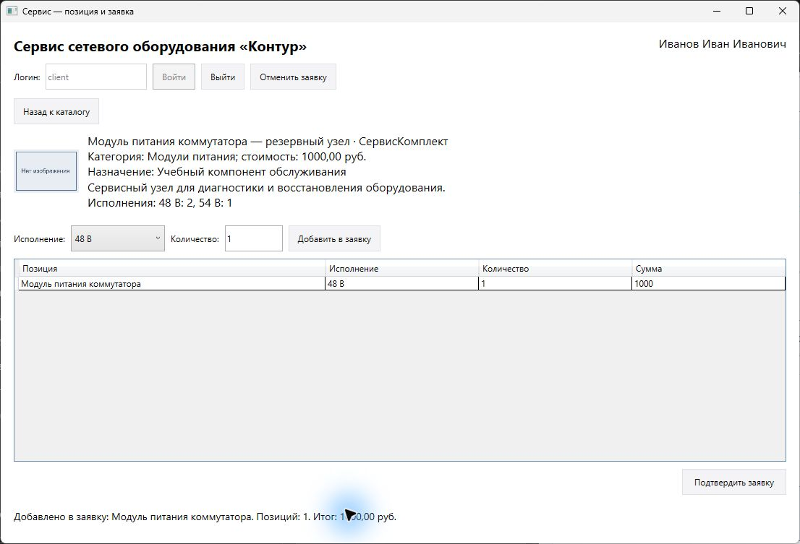
Рисунок 7 — После исправления Back в карточке P5 осталась исходная строка P1 с количеством 1. Сравнивать таблицу заявки, а не только сообщение внизу.
ПМ.04 · Раздел 3.5
D3. Совместный отбор и числовой порядок
1
Получить ожидаемый набор до запуска
На чистой демонстрации войти как client. Для запроса «сервисный» и категории «Модули питания» выписать Id: P1 и P5. P3 тоже содержит слово в описании, но относится к другой категории; P2 относится к нужной категории, но не содержит слова. Выбрать направление стоимости и выполнить запрос.
Проверка. Исходный OR объединяет условия и пропускает лишние P2/P3. При пустом поиске текстовое условие истинно для любой позиции, поэтому ошибка особенно заметна.
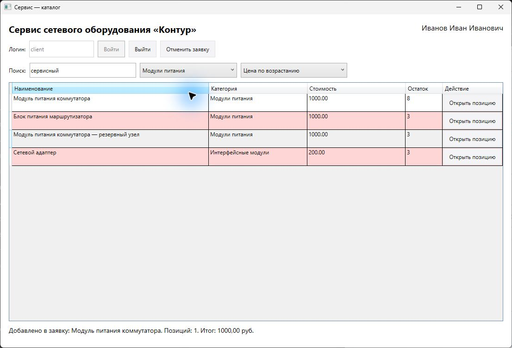
Рисунок 8 — Исходный D3: совместный отбор пропускает P2 и P3, а числовое значение 200 стоит после 1000 из-за сравнения строк.
2
Разделить причины внутри одного результата
Открыть Catalog. Между категорией и поисковым условием требуется &&. Внутри поиска оставить || между именем и описанием. В OrderBy убрать ToString: строка «1000» сравнивается раньше «200», хотя число 1000 больше 200. Дополнительный ThenBy по Id обеспечивает постоянный порядок при равной стоимости. Заменить Catalog целиком.
Повторить те же запрос и категорию: получены P1/P5. Выбрать «Все категории», очистить поиск: по возрастанию порядок P4 (90), P3 (200), P1, P2, P5 (1000); по убыванию P1, P2, P5, P3, P4. При равенстве Id всегда возрастают. Проверить поиск только по описанию, пробелы по краям и отсутствие совпадений.
Проверка. Открытие позиции и возврат сохраняют поиск, категорию, направление и заявку. В индивидуальной области состав и порядок вычислить заново из своего JSON.
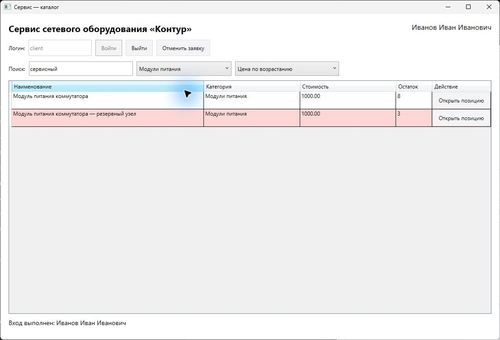
Рисунок 9 — После исправления совместный отбор оставил только P1 и P5. Запрос «сервисный» и категория «Модули питания» действуют одновременно.
5
Проверить оба направления отдельно
После совместного отбора выбрать «Все категории» и очистить поиск. Сравнить весь порядок по возрастанию с контрольным снимком в начале методики: P4 (90), P3 (200), P1, P2, P5 (1000). Затем выбрать убывание: P1, P2, P5, P3, P4. При равной стоимости второй ключ Id остаётся возрастающим. Вернуть направление, открыть карточку и выполнить возврат.
Проверка. Числовое направление сохранено. Для своего варианта выписать ожидаемый состав и порядок до запуска, учитывая округление Price до двух знаков.
ПМ.04 · Раздел 3.6
Проверка готовой операции и исправление ввода
1
Вызвать отказ без потери данных
На чистой копии войти как client. Открыть P1, выбрать первое исполнение, добавить 3. Не подтверждать. Ввести ещё 3 и нажать добавление: готовый OrderService отклоняет 3 + 3 > 5. Закрыть сообщение.
Проверка. Остались первая строка с 3 единицами, выбранное исполнение и ошибочное значение 3 в поле. Stock равен 5, Orders пуст. Сохранить доказательство отказа.
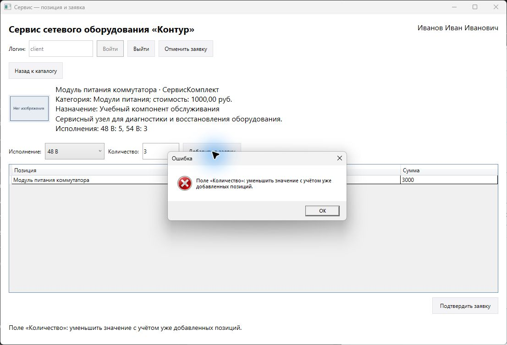
Рисунок 10 — Готовая операция отклонила повторные 3 единицы при уже добавленных 3 и ресурсе 5. Первая строка, исполнение и поле ввода сохранились.
2
Исправить только указанное поле
В том же окне заменить 3 на 2 и повторить добавление. Получены две строки общим количеством 5. Отдельно на чистой копии проверить 0, -1, abc, 1,5 и слишком длинное число; после каждого отказа заменить значение на 1 и продолжить.
Проверка. Ошибка называет поле «Количество»; исправление не требует повторного ввода логина и восстановления уже добавленных строк.
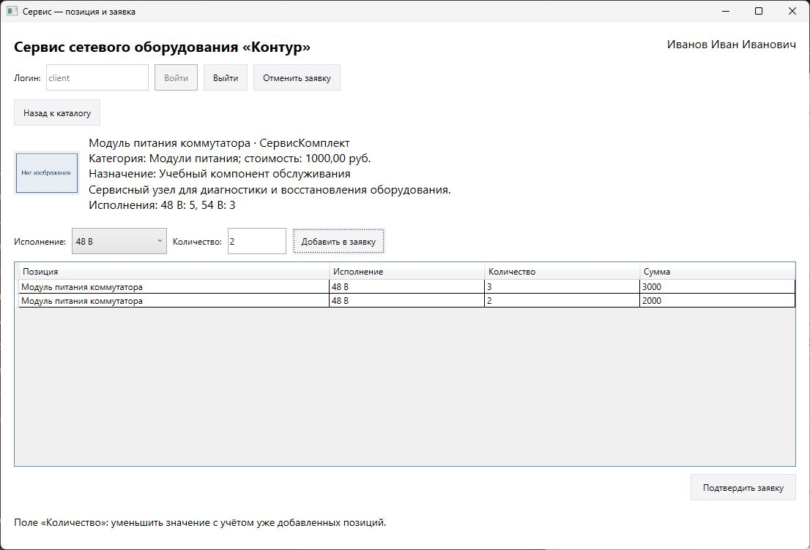
Рисунок 11 — Две успешные строки 3 и 2 сохранены; последующая попытка добавить ещё 2 отклонена. Ошибка третьего добавления не отменяет принятые строки.
3
Подтвердить и проверить сохранение
На отдельной чистой копии добавить 2 единицы первого исполнения P1 и 1 первого исполнения P3, переходя через каталог. Подтвердить заявку. Закрыть приложение, открыть work-data.json в Visual Studio. Сопоставить Orders: один объект, Login = client, дата фактического действия, две строки. P1: первое исполнение стало 3, второе осталось 3. Для P3 вычислить остаток как исходный минус 1. Перезапустить с тем же путём.
Проверка. Остатки и заявка сохранены. Не повторять это ожидание поверх уже изменённых ресурсов: для независимого теста восстановить baseline.json.
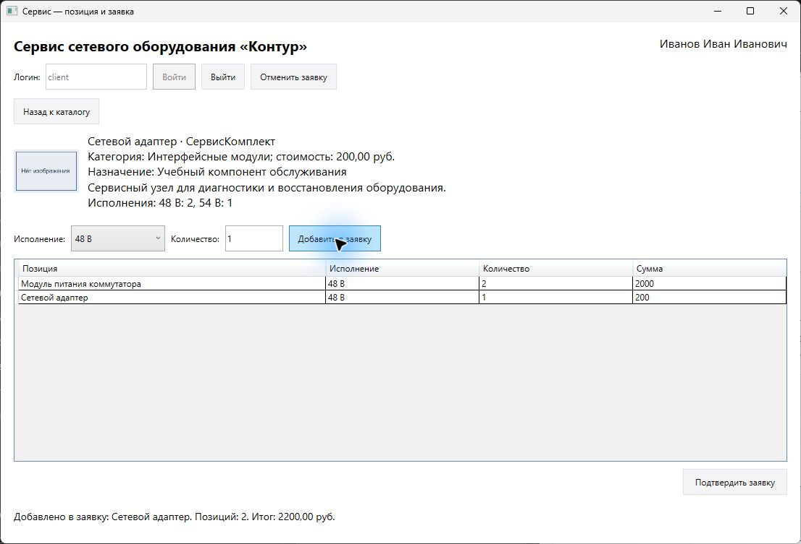
Рисунок 12 — Независимая чистая проверка подтверждения: две единицы P1 и одна P3, итог 2200. До подтверждения ресурсы остаются исходными.
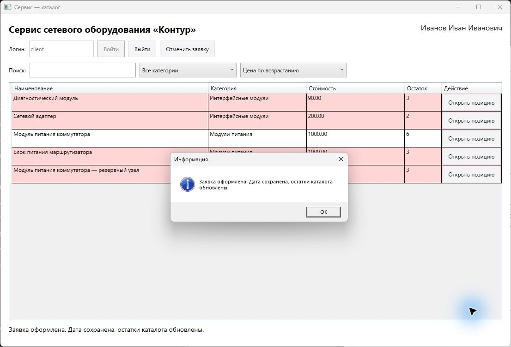
Рисунок 13 — Подтверждение завершено. Общий остаток P1 стал 6, P3 — 2; изменение отдельного исполнения проверяется по Stock в рабочем JSON.
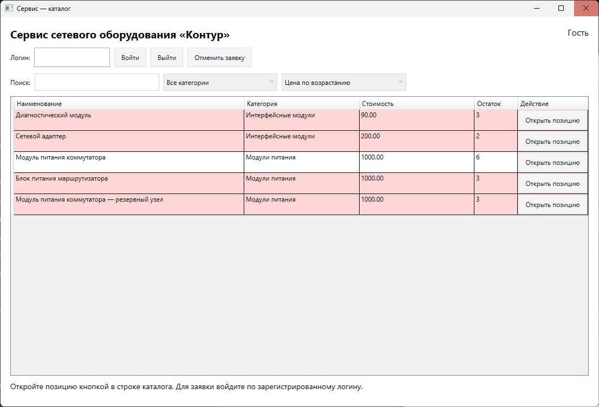
Рисунок 14 — После закрытия и повторного запуска остались изменённые общие остатки P1 = 6 и P3 = 2. История и дата проверяются в том же рабочем JSON.
4
Обработать отказ сохранения
Если папка недоступна для записи, Confirm_Click сообщает об ошибке; рабочая коллекция и неподтверждённая заявка остаются. Сохранить проект в доступной собственной папке и повторить подтверждение с тем же файлом. Не менять права общих папок ради опыта.
Проверка. Сообщение об успешной записи и изменённый JSON необходимы одновременно. Одного нажатия кнопки недостаточно.
5
Проверить данные независимо от сообщения
Открыть именно рабочий файл, указанный аргументом запуска. В Orders найти новый объект: Login = client, Date соответствует фактическому подтверждению, Lines содержит P1 с Quantity = 2 и P3 с Quantity = 1. В Products проверить P1.Stock: 48 В = 3, 54 В = 3; P3.Stock: 48 В = 1, 54 В = 1. Снимок каталога показывает сумму исполнений, поэтому только по нему нельзя доказать изменение нужного ключа.
Проверка. Один заказ, две строки и четыре контрольных остатка согласованы. Не использовать дату и данные образца как готовый ответ индивидуального варианта.
ПМ.04 · Раздел 3.7
Контракт повторного использования
1
Сопоставить входы и результаты
Authenticate принимает последовательность объектов IRegisteredUser и логин, возвращает исходный объект или null без изменения данных. Catalog принимает объекты ICatalogItem, запрос, точное значение категории или «Все категории» и bool направления; возвращает новый список тех же объектов без изменения входа. Back принимает коллекцию строк и сохраняет её.
Проверка. Login и Id уникальны, строковые поля не null; DiscountPrice рассчитан вызывающей стороной. Ошибка входа представлена null, пустая выборка — пустым списком.
2
Подключить другую модель через адаптер
В другой области сопоставить собственные поля с интерфейсом: код оборудования → Id, название узла → Name, примечание → Description, группа → Category, стоимость → DiscountPrice. Имя учётной записи → Login. Реализовать интерфейс своим объектом либо небольшим адаптером; передать коллекцию в те же методы без копирования алгоритма и без зависимости от StoreData.
Проверка. Файлы ComponentContracts.cs и принятый RepairLogic.cs используются без переписывания. Пример адаптера и ограничения находятся в contract.md; он показывает другой объект, а не готовый индивидуальный вариант.
3
Сохранить границу операции
OrderService использует готовую модель заявки данного стенда. Перенос диагностических компонентов не означает перенос хранения JSON или подтверждение работы с БД. На следующем этапе источник данных и операция заказа подключаются отдельно по собственному контракту.
Проверка. Принятый результат УП04 — исправленные вход, возврат и отбор с доказательствами. Создание транзакционного заказного модуля сюда не добавляется.
ПМ.04 · Раздел 3.8
Индивидуальная проверка и сдача
1
Перенести способ на индивидуальную область
Из карточки своего варианта взять названия, Id, категории, исполнения, исходные количества и дополнительное условие. Например, в варианте 02 исполнение P1 задаётся 12 В или 24 В, а в демонстрации — 48 В или 54 В. Названия и контрольные строки подменяются данными назначенного JSON, а принципы входа, навигации и отбора сохраняются. Для необычного дополнительного условия использовать соответствующий приём: пустой набор — нулевой остаток; строковое исполнение — точный ключ Stock; одинаковые имена — разные Id; округление — decimal.Round; отказ — отсутствие изменения коллекции.
Проверка. Снимки в методике показывают демонстрацию. Для отчёта самостоятельно выполнить свои проверки и получить собственные доказательства; копирование иллюстраций методички результатом варианта не считается.
2
Выполнить условия карточки
Открыть свою область, сверить её исходные данные и дополнительный сценарий. Для D1–D3 сначала получить симптом на исходном стенде, затем объяснить причину и проверить свою правку теми же входами. Дополнительный сценарий выполнить на назначенных Id и исполнениях. Рассчитать ожидание до запуска, добавить одну соседнюю регрессию с объяснением её назначения.
Проверка. Не заменять индивидуальный JSON демонстрацией и не выдавать снимок образца за собственный результат.
3
Подготовить отчёт и инструкцию
Заполнить форму report-template.docx: область, среда, путь рабочего файла, исходные данные, три диагностические записи, отказ и исправление ввода, готовая операция, дополнительный сценарий и ограничения. Вставить фактические снимки и значения JSON. В самом отчёте указать открывающуюся ссылку на репозиторий проекта. Описать пользователю запуск, вход, поиск, возврат, отказ, отмену и подтверждение.
4
Проверить комплект сдачи
Открыть ссылку на проект, собрать его из чистой копии с индивидуальным baseline.json. Проверить отсутствие чужих данных и результатов испытаний в исходном наборе. Приложить отчёт, инструкцию, аттестационный лист, индивидуальное задание и презентацию по формам, предоставленным преподавателем через EatDoners. Подписи и сведения об организации заполняются по фактическим данным.
Проверка. Все обязательные действия имеют способ выполнения и доказательство. Непроверенные условия назвать явно; один успешный заказ не заменяет три диагностики.
ПМ.04 · Для углубления
Литература и документация
Грекул, В. И. Проектирование информационных систем : учебное пособие / В. И. Грекул, Г. Н. Денищенко, Н. Л. Коровкина. — 4-е изд. — Москва : Интернет-Университет Информационных Технологий (ИНТУИТ), Ай Пи Ар Медиа, 2024. — 299 с. — ISBN 978-5-4497-3335-1. — Текст : электронный // Образовательная платформа IPR СМАРТ : [сайт]. — URL: https://www.iprbookshop.ru/books/142298/details
Цехановский, В. В. Проектирование информационных систем: архитектуры и платформы : учебное пособие / В. В. Цехановский, А. И. Водяхо. — Москва : Ай Пи Ар Медиа, 2023. — 240 с. — ISBN 978-5-4497-1786-3. — Текст : электронный // Образовательная платформа IPR СМАРТ : [сайт]. — URL: https://www.iprbookshop.ru/books/123568/details